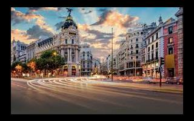

Madrid
Es la capital central de España con elegantes bulevares y amplios parques muy cuidados, como el Buen Retiro. Es famosa por sus ricas colecciones de arte europeo, con obras de Goya, Velázquez y otros maestros españoles en el Museo del Prado. El corazón del antiguo Madrid de los Habsburgo es la Plaza Mayor bordeada de pórticos y cerca se encuentra el Palacio Real y la Armería, que exhiben arsenales históricos.
Tiempo: 9 °C, viento del SO a 11 km/h, humedad del 97 %
País: España
Población: 6.55 millones (2018)
